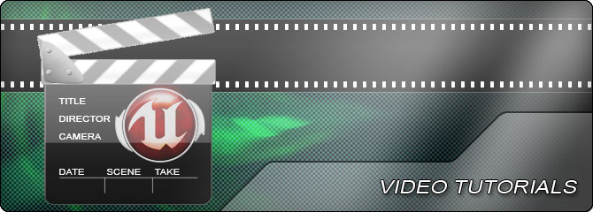

UDN
Search public documentation:
VideoTutorials
日本語訳
中国翻译
한국어
Interested in the Unreal Engine?
Visit the Unreal Technology site.
Looking for jobs and company info?
Check out the Epic games site.
Questions about support via UDN?
Contact the UDN Staff
中国翻译
한국어
Interested in the Unreal Engine?
Visit the Unreal Technology site.
Looking for jobs and company info?
Check out the Epic games site.
Questions about support via UDN?
Contact the UDN Staff
UE3 Home > Unreal Engine 3 Video Tutorials
Unreal Engine 3 Video Tutorials

Accessing the Videos
Each of the links below points to a tutorial, grouped by topic or specific feature. The video tutorials are linked to a media repository from this page. Simply right-click and save the video to your local hard drive. Even though they are compressed, some of the files are quite large, so to reduce bandwidth consumption, we'd appreciate you having one person download all the videos and store them in a directory that's accessible to the whole team. NOTE: These video tutorials were made using the Unreal Development Kit. For more information on UDK, go here. Please right-click and save each file to your local storage space.
Engine Tutorials
The file format is Windows Media Video (.wmv). No other codecs are required.
Skeletal Mesh Pipeline - Using UDK
Jeremy Ernst, Technical Animator at Epic Games, takes you through the Unreal Engine Skeletal Mesh pipeline. From getting your model from your 3D package into the editor, and getting it ready for your programmers, you will learn the steps to make your assets ready for your game. Each compressed archive contains one video:- Skeletal Meshes: Intro
- Skeletal Meshes: Skeletal Meshes Import/Export
- Skeletal Meshes: Mirror Tables
- Skeletal Meshes: Sockets
- Skeletal Meshes: Physics Assets
Video Training Modules
Often there's no better way to learn a tool than to watch it being used. With every Unreal Engine license, we provide an on-site training session for content developers, but it's not always feasible or possible for your entire team to attend. And of course, we're always adding new features to the engine, and we might add a tool after visiting your team. So, we've made a series of video recordings of our training team using our toolset. We used a video capture tool that provides excellent resolution, so you can actually read the text on the editor windows, etc.Accessing the Videos
Each of the links below leads to page of related training modules. For example, the VTMCascade page contains both a basic training module and a module that covers more advanced features. The video training modules (VTMs) are attached to the bottom of these pages. Simply right-click and save the video to your local hard drive. Some of the modules are quite large, so to reduce bandwidth consumption, we'd appreciate you having one person download all the videos and store them in a directory that's accessible to the whole team. For the development of these videos, we use an off-the-shelf tool called Camtasia Studio. To view the videos, you'll have to install their TechSmith Screen Capture Codec (TSCC). We've only tested this on Windows XP Pro with Windows Media Player (versions 9, 10 and 11). If you have any difficulties viewing these videos, please let us know.Training Topics
Note, VTMs are were made in 2005. The techniques and concepts shown are still the same, though the tools workflow and visuals might differ.- VtmEditor - UnrealEd features such as BSP, static mesh placement, lighting, level optimization
- VtmTerrain - Using UnrealEd terrain creation and modification tools
- VtmMatinee - Training with the UnrealMatinee cinematic tools
- VtmCascade - Training with the UnrealCascade particle tools
- VtmKismet - Training with the UnrealKismet visual scripting tools
- VtmPhAT - Using the Physics Asset Tool (PhAT) for collision, constraints, and more
- VtmConstraints - Using physical constraints in the Unreal Engine
- VtmMaterials - Training with the UnrealEd Material Editor
3D Buzz Video Tutorials - Using UDK
Known for high-quality Video Training Modules and the Mastering Unreal Technology book series, 3D Buzz has put together these videos that guide you through the basics of the Unreal Engine editing suite, as well as working with a simple game project. The file format is MP4. No other codecs are required. Each compressed archive contains one or more videos:
- User Interface: http://download.udk.com/tutorials/using-udk/user_interface.zip (34 videos)
- Simple Level: http://download.udk.com/tutorials/using-udk/simple_level.zip (27 videos)
- Lighting: http://download.udk.com/tutorials/using-udk/lighting.zip (5 videos)
- Geometry Mode: http://download.udk.com/tutorials/using-udk/geometry_mode.zip (6 videos)
- Kismet: http://download.udk.com/tutorials/using-udk/kismet.zip (11 videos)
- Materials: http://download.udk.com/tutorials/using-udk/materials.zip (8 videos)
- Terrain: http://download.udk.com/tutorials/using-udk/terrain.zip (1 video)
- Fractured Static Meshes: http://download.udk.com/tutorials/using-udk/fractured_static_meshes.zip (4 videos)
- Sounds: http://download.udk.com/tutorials/using-udk/sounds.zip (6 videos)
- Particles: http://download.udk.com/tutorials/using-udk/particles.zip (9 videos)
- Fluid Surfaces: http://download.udk.com/tutorials/using-udk/fluid_surfaces.zip (3 videos)
- Physics: http://download.udk.com/tutorials/using-udk/physics.zip (4 videos)
- Cinematics: http://download.udk.com/tutorials/using-udk/cinematics.zip (12 videos)
http://download.udk.com/tutorials/using-udk/3dbuzz_assets.zip
http://download.udk.com/tutorials/using-udk/UIDemoAssets.zip
Subtitles
English subtitle files (.srt) have been made available for these videos. These are text files with timing information suitable for translation into other languages. You should use a video player that supports .srt subtitle format, such as VLC or GOM Player to view the video with the subtitles. Here are the links for:
Community Contributed Videos
The UDK community has contributed a large number of videos. Please check them out: Community Videos.
Eat3D
Eat 3D is a professional video training company that focuses to have the highest quality training videos geared toward 3D Artists. They put an obsessive amount of time and effort into their work, and are proud of the results.
3dmotive
3dmotive creates and produces high quality digital training and tutorials by game industry pros, all delivered in HD and streamed instantly.